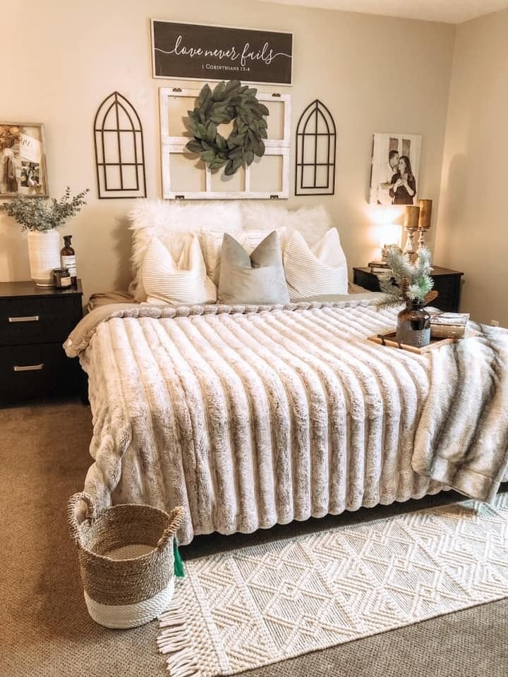
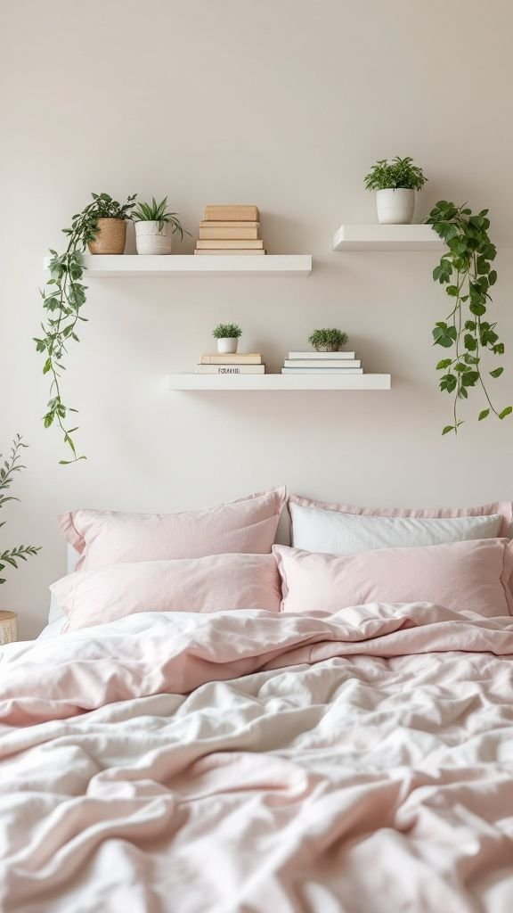
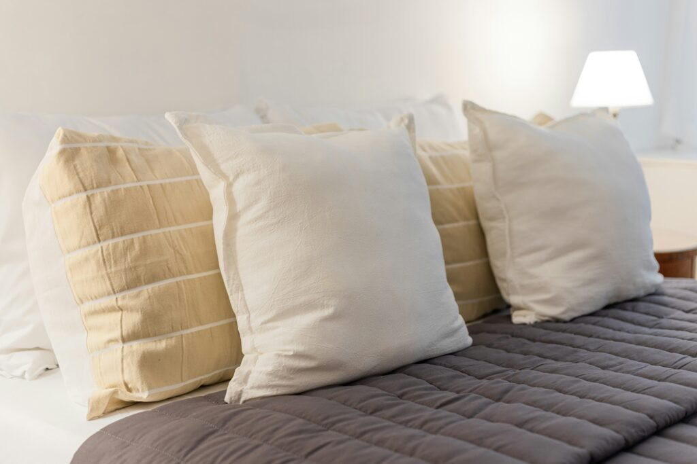
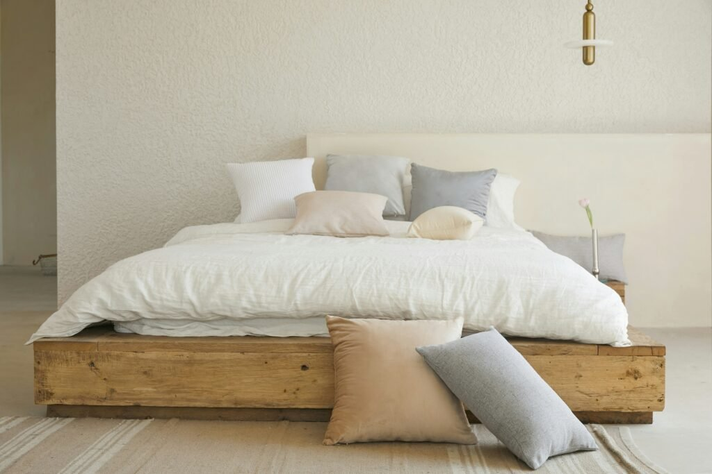
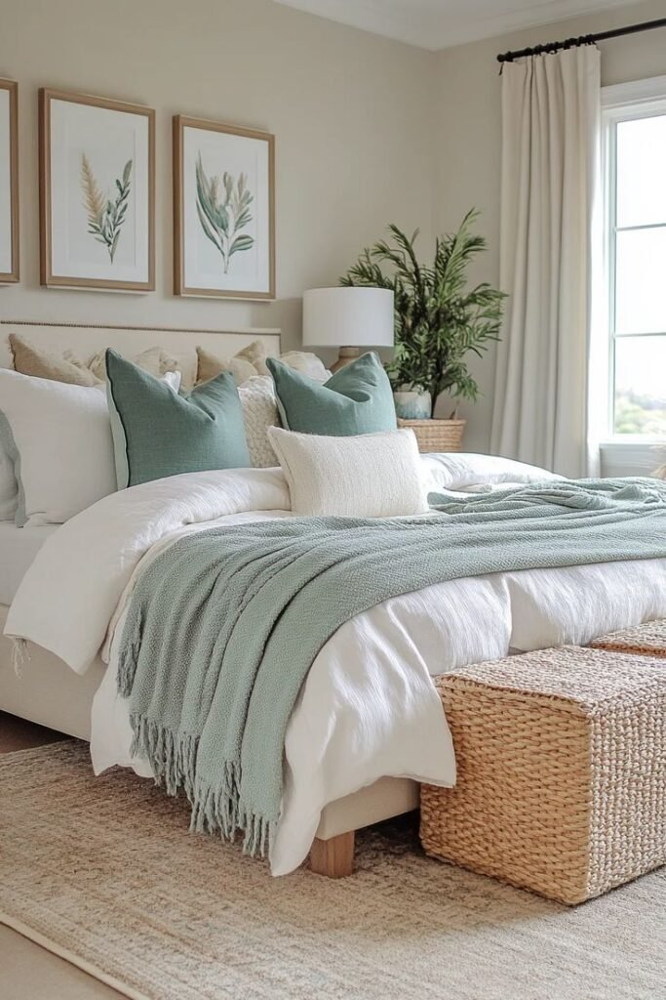

A bed without a headboard can feel like a blank canvas with absolutely no obvious starting point for styling it.
Pillows are the actual fix here. The right arrangement does the visual job a headboard would normally handle, without adding a single piece of furniture to the room.
This covers the real technique behind that, not just a list of different pillow types to go buy.

The Go-To Formula
Two Euro shams in back, two to four standard pillows in front, and one or two smaller accents on top covers most bed sizes and styles without much extra thought.
Adjust the exact count for the bed's actual width, but keep that large-to-small layering order consistent no matter what.
Adding a Personal Touch
A pillow in a meaningful color, a handmade or vintage find, or one slightly unexpected texture gives the arrangement real personality instead of reading as generically styled.
This is the detail that makes the bed feel like it genuinely belongs to the person sleeping in it, not a showroom display set up for someone else.

Swapping the Look Seasonally
Swapping accent pillow covers, warmer tones and textures for cooler months, lighter ones for warmer months, refreshes the whole bed without redoing the entire arrangement from scratch.
This is one of the easiest ways to keep a headboard-free bed feeling current throughout the entire year.
Adjusting for Different Bed Sizes
A twin or full bed generally needs fewer pillows in the arrangement than a queen or king, simply to avoid overwhelming the smaller surface underneath them.
A wider bed can support a more elaborate layered arrangement, since there's more physical space for the technique to actually read clearly.
Common Mistakes to Avoid
Too few pillows is the most common mistake made here, a headboard-free bed generally needs more visual weight at the top than one with a headboard, not less.
Matching every pillow exactly reads as stiff; some intentional variation in size, texture, or pattern reads as considered instead.
Pillows pushed flat against the wall without any lean or angle lose most of the dimensional effect the layering technique is actually built on.
A Few Practical Tips
Pillows leaned directly against the wall, rather than laid flat, create the illusion of a headboard's height and structure even though nothing's actually there.
Fluffing and shaping each pillow before placing it matters more here than on a bed with a headboard, since there's no furniture around to distract from a flat, lifeless pillow.

The Layering Technique
Start with the largest pillows, Euro shams, stacked or leaned against the wall first, since they create the base layer everything else gets built on top of.
Layer standard sleeping pillows in front of those, then finish with one or two smaller accent pillows angled slightly for visual interest at the very front.
This back-to-front, large-to-small order is really the core of the whole technique, skipping a layer is usually what makes an arrangement feel thin and unfinished.

Choosing the Right Pillows First
A mix of sizes, standard sleeping pillows, a couple of larger Euro shams, and one or two smaller accent pillows, gives the arrangement something to actually layer in the first place.
All one size reads as flat; a genuine size mix is what creates the fullness that ends up replacing a headboard's visual weight entirely.

Why This Matters More on a Headboard-Free Bed
A headboard normally anchors the top of the bed visually, without one, that job falls entirely onto how the pillows actually get arranged.
Done well, pillows alone can make the bed look completely finished. Done carelessly, the same exact bed reads as unfinished no matter how nice the bedding itself happens to be.

Final Thoughts
A missing headboard really isn't a design problem that needs furniture to fix in the end.
The right pillow layering does the exact same visual job, for a fraction of the cost and with the flexibility to change the whole look anytime the mood strikes.
Start with the layering order described above, then let personal touches and seasonal swaps keep the whole thing feeling fresh going forward.